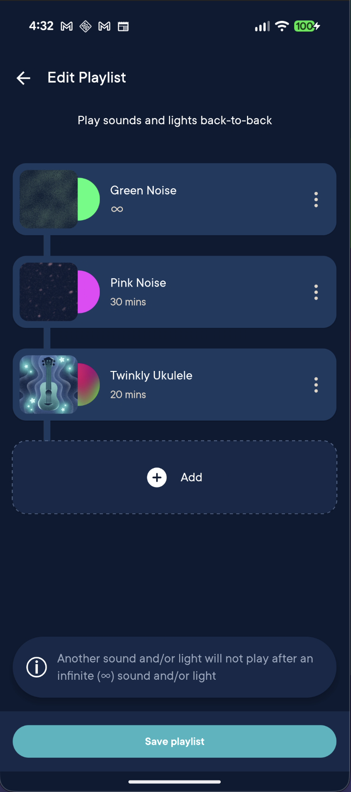

Hatch Baby · Android
Edit Playlist
Shipped playlist editing so users could manage saved sounds more easily in a core part of the app experience. The challenge was keeping add and edit behavior consistent while still moving quickly for release. I built it with a single immutable UI state, intent-driven MVI flow, and layered use-case and repository boundaries to keep behavior predictable and the implementation easy to extend and test.
Tech Stack
- Kotlin
- Jetpack Compose
- Coroutines
- Flow
- MVI